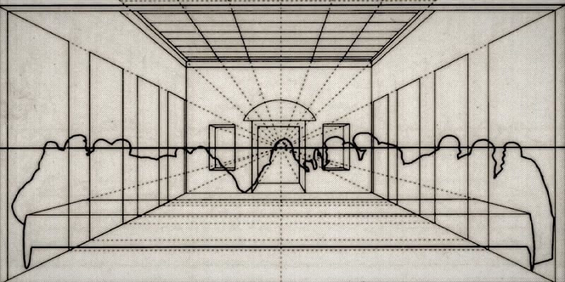

The Last Supper - by Leonardo Da Vinci

In 1495, Leonardo da Vinci began what would become one of history's most influential works of art -
The Last Supper
The Last Supper is Leonardo's visual interpretation of an event chronicled in all four
of the Gospels (books in the Christian New Testament). The evening before Christ was betrayed by one of
his disciples, he gathered them together to eat, tell them he knew what was coming and wash their feet
(a gesture symbolizing that all were equal under the eyes of the Lord). As they ate and drank together,
Christ gave the disciples explicit instructions on how to eat and drink in the future, in remembrance of
him. It was the first celebration of the Eucharist, a ritual still performed.
Specifically, The Last Supper depicts the next few seconds in this story after Christ dropped the bombshell
that one disciple would betray him before sunrise, and all twelve have reacted to the news with different
degrees of horror, anger, and shock.
Leonardo hadn't worked on such a large painting and had no experience in the standard mural medium of
fresco. The painting was made using experimental pigments directly on the dry plaster wall and unlike frescos,
where the pigments are mixed with the wet plaster, it has not stood the test of time well. Even before it was
finished there were problems with the paint flaking from the wall and Leonardo had to repair it. Over the years
it has crumbled, been vandalized bombed and restored. Today we are probably looking at very little of the
original.
Much of the recent interest in the painting has centered on the details hidden within the painting, but
in directing attention to these 'hidden' details, most people miss the incredible sense of perspective the
work displays. The sharp angling of the walls within the picture, which leads back to the seemingly distant
back wall of the room and the windows that show the hills and sky beyond. The type of day shown through these
windows adds to the feeling of serenity that rests in the center of the piece, around the figure of Christ.
The Layout of The Last Supper

Leonardo balanced the perspective construction of the Last Supper so that its vanishing point is immediately
behind Christ's right temple, pointing to the physical location of the center, or sensus communis, of
his brain. By pulling a string in radial directions from this point, he marked the table ends, floor lines, and
orthogonal edges of the six ceiling coffer columns. From the right and/or left edge of the horizon line, he drew
diagonal lines up to the coffer corners, locating points for the horizontal lines of the 12 coffer rows.
Leonardo was well known for his love of symmetry. In his Last Supper, the layout is largely horizontal.
The large table is seen in the foreground of the image with all the figures behind it. The painting is
largely symmetrical with the same number of figures on either side of Jesus. The above diagram shows how the
perspective the Last Super was worked out with a series of marks at key points highlighting the architectural
aspects of the composition and positioning of the figures.